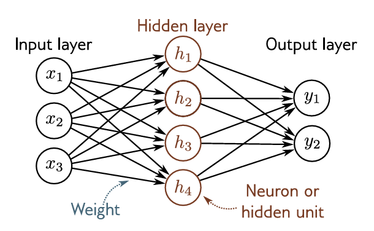

class Neuron:
def __init__(self, nin):
self.w = [Value(random.uniform(-1, 1)) for _ in range(nin)]
self.b = Value(random.uniform(-1, 1))
def __call__(self, x):
act = sum(wi*xi for wi, xi in zip(self.w, x)) + self.b
return act.tanh()In Part 1 we created a full-fledged autograd engine from the ground up. In this part, we will build and train our own little neural network by utilising the autograd engine.
Building a Multi-Layer Perceptron (MLP)
An MLP is a neural network containing one or more hidden layers. A single neuron in an MLP computes and outputs the activations (linear relation followed by an (optional) non-linear function) of its inputs.

If \(W\) is the weight matrix and \(X\) is the input matrix, the output of a single neuron is,
\[a = f(W\cdot X + b)\] , where \(f\) is a non-linear activation function and \(b\) is the bias.
Now, lets implement a Neuron class that does this.
The __call__ method implements the forward pass of the neuron.
Let’s try it out.
n = Neuron(2) # a neuron having two inputs
x = [0.5, -2.]
n(x)Value(data=-0.18630956619533254)Here’s whats happening: The neuron has 2 inputs, x1 and x2 which are multiplied with weights w1 and w2, which are sampled uniformly between -1 and 1, and the bias term b is added to the result, w1*x1 + w2*x2 + b and this linear representation is passed through the tanh function to give the neuron’s output, \[
\tanh(w_1\cdot x_1 + w_2\cdot x_2 + b)
\] Pretty straightforward.
Next up, let’s implement Layer which is just a bunch of neurons which aren’t connected to each other but are fully connected to the input (the previous layer).
class Layer:
def __init__(self, nin, nout):
self.neurons = [Neuron(nin) for _ in range(nout)]
def __call__(self, x):
outs = [n(x) for n in self.neurons]
return outs[0] if len(outs) == 1 else outs # if there's a single output, we don't want it to be wrapped in a listAgain, the code should be quite self explanatory.
Let’s see a layer in action.
x = [0.5, -2.]
l = Layer(2, 3) #2 inputs, 3 independent neurons
l(x)[Value(data=0.9316061471543342),
Value(data=-0.9925428606439287),
Value(data=0.7940286717352634)]3 outputs as expected. So far so good.
Now, lets pull up all our neurons and layers together to create an MLP.
nouts is a list of neurons in each layer.
class MLP:
def __init__(self, nin, nouts):
sz = [nin] + nouts
self.layers = [Layer(sz[i], sz[i+1]) for i in range(len(nouts))]
def __call__(self, x):
for layer in self.layers:
x = layer(x)
return xLets run a forward pass of this MLP.
# three inputs
x = [1, 2, 3]
#3 layers, first having 4 neurons, the second having 2, and the last having a single neuron
nouts = [4, 2, 1]
#model
m = MLP(3, nouts)
#forward pass
m(x)Value(data=-0.8973431783444543)Neat! We’ve got out little MLP running.
Loss Function
We’ve build a simple neural network, that’s all great but how do we know if its any good? This is where loss functions come into the picture. Loss function gives us a single scalar value that allows us to quantitatively judge a model’s performance. Lower the loss, the better is the model. Thus, training a neural network refers to choosing the right set of parameters that lead to a lower loss.
We’ll begin by creating a tiny dataset. The Y values correspond to the output for the corresponding input X. We essentially want our neural network to perform binary classification.
X = [
[2.0, 3.0, -1.0],
[3.0, -1.0, 0.5],
[0.5, 1.0, 1.0],
[1.0, 1.0, -1.0],
]
Y = [1.0, -1.0, -1.0, 1.0] # desired targetsLet’s see what our MLP with default parameters predicts.
preds = [m(x) for x in X]
preds[Value(data=-0.9731970202739209),
Value(data=-0.8965799622430423),
Value(data=-0.9641324434027786),
Value(data=-0.9215067677945139)]The MLP is performing pretty terribly at the moment. How bad you ask? Let’s use a simple squared error loss function for that.
loss = sum(((y_pred-y)**2 for y_pred, y in zip(preds, Y)))
lossValue(data=7.597676925323905)The loss is 0 when our predictions are exactly equal to the true values.
But how do we minimize the loss?
Gradient Descent
Let’s call the .backward() method on the loss and see what happens.
loss.backward()m.layers[0].neurons[0].w[0].grad-0.3774265300484028The weights of the neurons now have (non-zero) gradients thanks to out backward pass.
The negative gradient indicates that increasing this particular weight will make the loss go down. Similarly if we nudge all the parameters (weights and biases) in the direction opposite to their gradient, we can expect to minimize the loss. To do this, let’s first collect all model parameters so that we can update them all in one go.
class Neuron:
def __init__(self, nin):
self.w = [Value(random.uniform(-1, 1)) for _ in range(nin)]
self.b = Value(random.uniform(-1, 1))
def __call__(self, x):
act = sum(wi*xi for wi, xi in zip(self.w, x)) + self.b
return act.tanh()
def parameters(self):
return self.w + [self.b]class Layer:
def __init__(self, nin, nout):
self.neurons = [Neuron(nin) for _ in range(nout)]
def __call__(self, x):
outs = [n(x) for n in self.neurons]
return outs[0] if len(outs) == 1 else outs
def parameters(self):
params = []
for n in self.neurons:
ps = n.parameters()
params.extend(ps)
return paramsclass MLP:
def __init__(self, nin, nouts):
sz = [nin] + nouts
self.layers = [Layer(sz[i], sz[i+1]) for i in range(len(nouts))]
def __call__(self, x):
for layer in self.layers:
x = layer(x)
return x
def parameters(self):
params = []
for l in self.layers:
ps = l.parameters()
params.extend(ps)
return paramsNow, we can grab all the parameters of the network like so:
x = [1, 2, 3]
nouts = [4, 2, 1]
m = MLP(3, nouts)
m(x)
m.parameters()[Value(data=0.9570846787972174),
Value(data=0.31915267955407445),
Value(data=0.7018955388242962),
Value(data=-0.3335361821232903),
Value(data=-0.599362755237959),
Value(data=-0.3458541523874765),
Value(data=0.6934652303346629),
Value(data=-0.5557157651208695),
Value(data=-0.7497140978164074),
Value(data=-0.8952754566500449),
Value(data=-0.938458042336328),
Value(data=-0.028495997807620466),
Value(data=-0.06475822748304472),
Value(data=0.40681450338062586),
Value(data=-0.40169697478775035),
Value(data=0.30806358721514426),
Value(data=-0.7340709666658356),
Value(data=0.18919788644542823),
Value(data=-0.5804923344061348),
Value(data=-0.22274505607706163),
Value(data=0.9938108289241792),
Value(data=0.6214299384656257),
Value(data=0.4912326104078326),
Value(data=0.033810534355125155),
Value(data=0.8849979216108752),
Value(data=-0.6443632355448854),
Value(data=-0.31275994137978014),
Value(data=0.2997596033736216),
Value(data=-0.804460736802685)]Now that we have all our parameters in one place, we will update their values based on the gradient information. Nudging the parameter value in the opposite direction to the gradient minimizes the loss.

for p in m.parameters():
p.data -= 0.01*p.gradThe scalar factor (\(0.01\) in this case) determines how big of a step we are taking in the direction of the minima. It is called the learning rate and is a hyperparameter of the model (that is, it is not learned during training but set manually). The higher the learning rate, the faster we’ll approach the minima, but with a too high value, there’s a chance of overshooting and the loss increasing instead.
Now let’s again use our model to make predictions and evaluate the loss.
preds = [m(x) for x in X]
loss = sum(((y_pred-y)**2 for y_pred, y in zip(preds, Y)))
lossValue(data=6.208941217251937)Okay, so our loss has gone down a little. If we keep on updating the parameters, the loss will (hopefully) keep getting lower.
Finally, we can write down a training loop with the forward pass, backward pass and parameter update. We’ll run this loop 20 times (called the number of epochs).
for k in range(20):
#forward pass
preds = [m(x) for x in X]
loss = sum(((y_pred-y)**2 for y_pred, y in zip(preds, Y)))
#backward pass
loss.backward()
#update params
for p in m.parameters():
p.data -= 0.01 * p.grad
print(f'epoch: {k}, loss: {loss.data}')epoch: 0, loss: 6.208941217251937
epoch: 1, loss: 6.056959827747116
epoch: 2, loss: 5.723776432733178
epoch: 3, loss: 5.160490416926962
epoch: 4, loss: 4.3521441493058415
epoch: 5, loss: 3.4703651333760837
epoch: 6, loss: 2.962443134261985
epoch: 7, loss: 3.0696934813703454
epoch: 8, loss: 3.3995978230827695
epoch: 9, loss: 3.4821204012479656
epoch: 10, loss: 3.083212945879714
epoch: 11, loss: 1.9966522842914274
epoch: 12, loss: 0.9232860127290902
epoch: 13, loss: 0.4478367575015849
epoch: 14, loss: 0.26532143242872064
epoch: 15, loss: 0.650759735046911
epoch: 16, loss: 0.2510464892017052
epoch: 17, loss: 0.03805675377993294
epoch: 18, loss: 0.014157092884907388
epoch: 19, loss: 0.006543777589572971And there you go! We’ve successfully managed to build and train a simple MLP from scratch.
Let’s see how the predictions look like
preds = [m(x) for x in X]
preds[Value(data=0.9866460176051887),
Value(data=-0.9621584068227153),
Value(data=-0.9617506297921213),
Value(data=0.98876399399386)]The predictions are now pretty close to the actual values.
That’s it. That was our MLP built and trained from first-principles. Here’s the final consolidated code for the neural network with a few tweaks which should be self-explanatory.
class Neuron:
def __init__(self, n_in, non_lin=True):
self.w = [Value(random.uniform(-1, 1)) for _ in range(n_in)]
self.b = Value(random.uniform(-1, 1))
self.non_lin = non_lin
def __call__(self, x):
act = sum(wi*xi for wi, xi in zip(self.w, x)) + self.b
return act.relu() if self.non_lin else act
def parameters(self):
return self.w + [self.b]
def __repr__(self):
return f"{'ReLU' if self.non_lin else 'Linear'}Neuron({len(self.w)})"
class Layer:
def __init__(self, n_in, n_out, **kwargs):
self.neurons = [Neuron(n_in, **kwargs) for _ in range(n_out)]
def __call__(self, x):
outs = [n(x) for n in self.neurons]
return outs[0] if len(outs) == 1 else outs
def parameters(self):
return [p for n in self.neurons for p in n.parameters()]
def __repr__(self):
return f"Layer of [{', '.join(str(n) for n in self.neurons)}]"
class MLP:
def __init__(self, n_in, n_outs):
sz = [n_in] + n_outs
self.layers = [Layer(sz[i], sz[i+1], non_lin=i!=len(n_outs)-1) for i in range(len(n_outs))]
def __call__(self, x):
for l in self.layers:
x = l(x)
return x
def parameters(self):
return [p for l in self.layers for p in l.parameters()]
def __repr__(self):
return f"MLP of [{', '.join(str(layer) for layer in self.layers)}]"